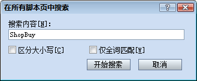

让我们从上往下的顺序来看吧。Vocab 是处理游戏用语和消息的模块
首先请从左边列表里选择 Vocab 组
第1到第6行是解释说明，这里不会有什么问题的。请看第8行。
module Vocab
在这里，定义了一个叫做Vocab的新的模块。在基础篇里进行显 示图片的时候，曾经使用过Graphics这个模块。和类一样，模块也可以自定义。具体见下面。
module 模块名
end
这与类定义的方法几乎是一样的。 模块除了不能生成对像实例外，基本上和类是一样的。实际上还有不能使用 include 进行 Mix-in 这一个区别，不过由于没有在预置脚本里使用，无视也可以。
还有，Vocab这个名称来源于 vocabulary (语汇)这个英语单词，Vocab是它的省略形式。
以大写字母开头的标识符就是常量。常量的定义（和初始化）就是进行代入赋 值，但是在方法里是不能定义的。常量除了数值还可以是字符串和其他对象。柳佳淇
ShopBuy = "购买"
ShopSell = "贩卖"
ShopCancel = "取消"
Possession = "持有数量"
就像是Vocab 组里的第 11 到 第 14 行这样就定义了常量。如果更改这里的字符串的内容的话，商店画面的相关名称也会改变。就像这样，以后对于可能要更改的东西预先放在一个地方，就是常量的用 法之一。
还有，让我们来找一找这个常量在脚本里什么地方被使用吧。这时候就需要使用[全局检索]功能。
按下Ctrl+Shift+F 就会打开 [全局检索]对话框，请检索ShopBuy 这个字符串。这是需要注意的是，不要和通常的检索 (Ctrl+F)混淆了。
如果在检索上成功，2个检索结果应该被表示。这个其中一个正是现在打开的 Vocab 语言模块里的，双击的话就会出现另一个检索结果。柳佳淇
s1 = Vocab::ShopBuy
s2 = Vocab::ShopSell
s3 = Vocab::ShopCancel
打开Scene_Shop 这个组，光标会移动上面这个部分。这个就是模块里面查看常量的方法。
模块名::常量名
'::' 这个运算符在前面讲解数据库的时候，出现过RPG::Actor 这个形式。由于类和模块的名字也可以和常量一样被使用，也就是说，叫做RPG的这个模块中Actor类已经被定义的意思。
Scene_Shop 组的其他部分和现在要讲的没有关系，请返回Vocab 模块。 柳佳淇
Vocab 在Vocab模块定义的下面，可以找到包含'%s' 这个符号的字符串。
DoAttack = "%s 出手攻击!"
DoGuard = "%s 护住身上弱点。"
DoEscape = "%s 逃跑了。"
DoWait = "%s 正在等待时机。"
UseItem = "%s使用了%s!"
我们来看下容易懂的地方。我们通过分析可以想到'%s'这个部分用来代替角色，物品的名字等。
它就是叫做
在Ruby 里面，请使用下面的脚本。请用TEST组来实验一下。柳 佳淇
p sprintf("%s受到%s点伤害！", "恶龙", 999) # => 恶龙受到999点伤害！
格式化字符串会代入最开始的参数，第2个以后，会自动替换指定的字符串或是数值。's'是填入字符串的指示 符，虽然是999 的数值，因为Ruby 可以自动转换成字符串，所以不用担心。这个例子直接让字符串和数值作为参数，当然实际上使用变量的情况比较多。
因为新的字符串会成为sprintf的返回值，所以在那里带入别的变量，如同例子那样带入的话也是可以的。 柳
另外在Vocab模块定义的下面，可以找到包含'%1$s' 或 '%2$s' 这样符号的字符串。
ActorLoss = "%1$s失去了%3$s点的%2$s！"
这代表格式化字符串会自动将代入的参数，按照1, 2, 3的顺序替换。所以
p sprintf("%1$s失去了%3$s点的%2$s！", "主角", "HP", 999) # => 主角失去了999点的HP！
使用sprintf ，不仅仅可以填入字符串，还可以输出指定位数的数值等。现在'%s'的作用明白的话，虽然没有什么问题，将来有必要的时候请参考 sprintf 格式这一部分。
继续向下看就会到下面这个地方。柳佳淇
def self.level
return $data_system.terms.level
end
看上去好像是方法定义，但是出现了'self.'这个东东。 这个就是模块定义。
另外还要说明的是，同一个定义在类定义中执行的时候，称做类方法。他们合 称为特殊方法。这个概念是Ruby所特有的，学习过其他程序语言的人也许会感到困惑。
困难的东西暂且不谈，在模块内定义方法的时候，使用'self.'这个方法还是十分实用的。
按照上面那样定义。柳佳淇
Vocab.level或者
Vocab::level
就可以这样使用方法的。实际写脚本的过程中，为了和常量形式统一。通常使用后面的写法。
如果像下面这样的定义方法
def level
return $data_system.terms.level
end
和普通的方法定义是相同的，这样书写方法会造成错误，需要注意。
一直解说模块的方法，还没有涉及到方法的内容。下面这行什么意思呢
return $data_system.terms.level
如果您仔细地看了前面说的数据库的部分，这个一点也不难。这个是取得数据库设定好的等级用语。其他剩余的由于都比较类似，就不再详细叙 述了。对于使用方法没有自信的，请复习函数的使用